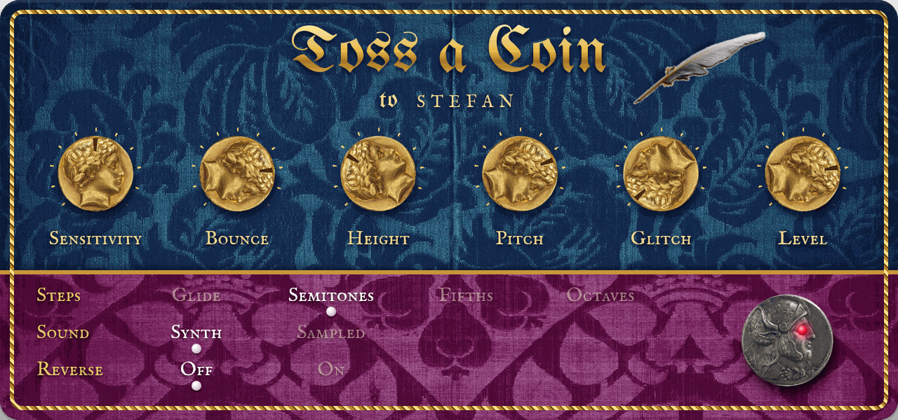

Imagine dropping a coin on a stone floor. The first bounce is high and slow, then the bounces come faster and faster until the coin rattles to a stop. Toss a Coin does that every time you dig into a note. Each bounce rings like a small bell, and the bounces step up (or down) in pitch as they go.
The twist is that the note you play sets the size of the coin. Play a low note and you drop a fat coin whose bounces start slow and take seconds to settle. Play a high note and you drop a small coin that clatters away quickly. Your melody turns into rhythm.
Soft playing passes through clean. Only hard attacks drop a coin, so you decide, note by note, when the coins fall. Your dry sound is never changed: the coins are added on top of it.
The silver coin on the right is the on/off footswitch. Its eye glows red while the pedal is on. When it's off your signal passes straight through and the coins go silent.
How hard you have to hit a note to drop a coin.
How lively the coin is: how much each bounce keeps of the one before.
How high the coin is dropped from: the wait before the first bounce. Higher notes always start quicker than lower ones.
How far the bounces travel in pitch over one drop, and which way.
The chance that a bounce jumps to a random note. Some jumps snap back on the next bounce; others carry on from the new note.
How loud the coins are. Your dry signal always stays at its own level.
The three rows on the purple panel. Click a word to pick it; the dot underneath shows the current choice.
| Selector | What it does |
|---|---|
| 7 STEPS | Which notes the bounces are allowed to land on, counted from the note you
played. There's no key setting; the steps always follow your note.
Glide: a smooth slide, like a whistle. Semitones (default): a chromatic run, one half step at a time. Fifths: fifths and octaves only, bright bugle-like leaps. Octaves: octave jumps only, the plainest and most consonant. |
| 8 SOUND | Synth (default): a small tuned metal plate, ringing two octaves
above your note with a bell-like tail. The rings overlap, so a fast rattle
blooms into a shimmering cluster.
Sampled: your own pick attack, chopped and replayed for every bounce, getting higher and shorter as the pitch climbs. It sounds like your instrument stuttering. |
| 9 REVERSE | Off (default): slow first, then faster, like a falling coin.
On: the drop plays backwards: it starts in a fast, loud flurry and slows down as it fades out, like a coin spinning up off the floor. |
Start from the default settings and change only what's listed.
Play a slow melody and dig into the first note of each phrase. Every phrase drops a coin that climbs an octave as it settles: low notes leave long, lazy rattles behind, high notes quick little ones.
The bounces leap in fifths and octaves, an octave and a fifth over the whole drop. Arpeggiated fanfares fall out of every hard note. Great on open strings.
Most bounces behave, then one leaps off to a strange note, and sometimes the rest of the drop follows it there. Every drop comes out different.
A fast, bright flurry right on the attack, which slows and sinks an octave as it fades. It sounds like tape spinning down behind each note.
Your own attack chirps back at you, jumping up in octaves and getting shorter and shorter. Short, percussive notes work best.
Short, quiet coins on nearly every note. Fast strumming turns into a glittering, rhythmic sparkle under the chords.
The pedal works best when you play dynamically. Set SENSITIVITY so your normal playing stays clean, then dig in on the notes you want to "pay".
The coins follow one pitch. Play single notes or let one note ring above the rest when you want the coin's size to follow your melody.
Up to six drops bounce at the same time. A seventh hard note takes over the oldest one, which is usually the one that has nearly stopped anyway.
Put a reverb or delay after Toss a Coin. The stereo output feeds stereo effects directly, and the bell rings bloom in a room.
With BOUNCE high, a low note can keep bouncing for several seconds. Turn BOUNCE or HEIGHT down if the drops pile up faster than they settle.
If the pedal can't hear a pitch, like a muted chop or a pick scrape, the coin takes the pitch of the last clear note you played.
Download the build for your platform from the
Releases page at github.com/stefdoerr/tossacoin/releases.
Replace X.Y.Z below with the version you downloaded.
tar xf tossacoin-vX.Y.Z-linux-amd64.tar.gztossacoin.lv2 folder into
~/Documents/MOD Desktop/lv2/tossacoin-vX.Y.Z-dwarf-aarch64.tar.gz on your computer.scp -O -r tossacoin.lv2 root@192.168.51.1:/root/.lv2/
ssh root@192.168.51.1 'systemctl restart jack2 mod-ui'
Linux, Windows and macOS builds are on the same Releases page. Put the plugin in your system's VST3 or CLAP folder and rescan plugins in your DAW. The macOS installer is unsigned: right-click it and choose Open.
jack2 and mod-ui (or reboot) after copying the
bundle.| Formats | LV2 (MOD Desktop, MOD Dwarf, Raspberry Pi), VST3 and CLAP (Linux, Windows, macOS) |
|---|---|
| Audio | Mono in, stereo out (the same signal on both sides) |
| Dry signal | Always passes through unchanged; coins are added on top |
| Pitch range | About 40 Hz to 1.5 kHz |
| Coins at once | Up to six drops; a new one replaces the oldest |
| Controls | Sensitivity, Bounce (70–97 %), Height (0.1–1.5 s), Pitch (−24…+24 semitones), Glitch (0–100 %), Level (−24…+6 dB), Steps, Sound, Reverse, on/off |
| Latency | None on the dry signal |
Toss a Coin is free software by Stefan, built with the DISTRHO Plugin Framework. Source and releases: github.com/stefdoerr/tossacoin. The pedal artwork uses public-domain and CC0 images from The Metropolitan Museum of Art and Wikimedia Commons, and the UnifrakturMaguntia and IM Fell English SC fonts (SIL Open Font License). November 2026 edition.